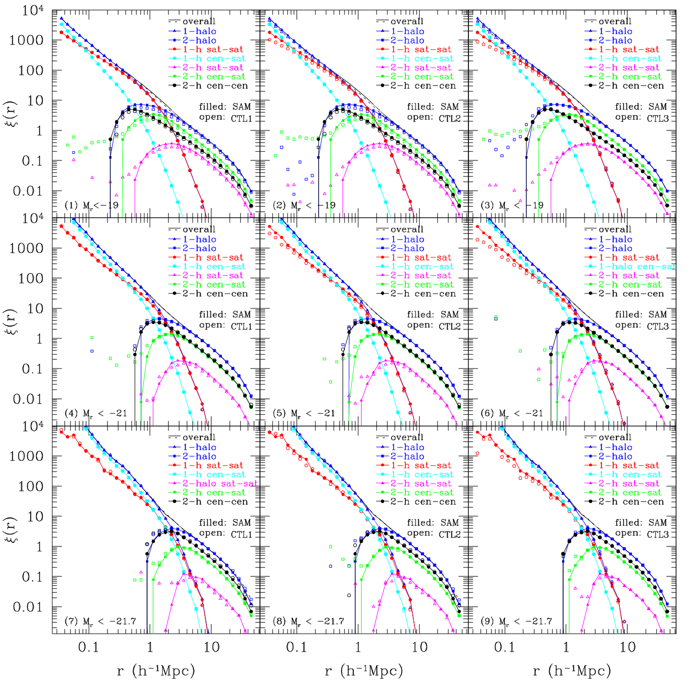

† Current Research:
• Cosmological Constraint from Cluster Weak Lensing
Measurements
• Physical Implications of AGN Variability from SDSS
Stripe82 Quasars
• Clustering of Faint Red Galaxies
† Publications:
• A New Approach To Reverberation Mapping
Zu, Y., Kochanek, C. S., & Peterson, B. M. 2010, accepted by ApJ
see
more or go to the code: SPEAR page.

The physical ansatz for reverberation mapping is that the continuum emission of the
quasar shows stochastic variability that then drives emission lines variations after a
propagation time delay known as the lag. We model the variability as a damped random walk and
develop a new approach to determine the lags, from which we can reconstruct the environment
of supermassive black holes, mostly notably, the radius of Broad Line Regions (BLR).
See paper in astro-ph or
Hide this content.
[Picture: BLR radius - Luminosity relation fitted from our new lags (open circles
) compared with that from traditional methods (gray solid points)

• Intergalactic Dust Extinction in Hydrodynamic
Cosmological Simulations
Zu, Y., Weinberg, D. H., Davé, R., Fardal, M., Katz, N., Kereš, D., Oppenheimer,
B. D. 2011, MNRAS, 412, 1059
see more.

Recently Menard et al. detected a subtle but systematic change in the mean color of
quasars as a function of their projected separation from foreground galaxies, extending
to comoving separations of ~ 10 Mpc, which they interpret as a signature of reddening by
intergalactic dust. We present theoretical models of this remarkable observation, using
smoothed particle hydrodynamic cosmological simulations. Our primary model uses a
simulation with galactic winds and assumes that dust traces the intergalactic metals. We
also examine a simulation with no galactic winds, in which a reasonable dust-to-metal can
be achieved only within a "hybrid" dust model.
See paper in astro-ph or
Hide
this content.
[Picture: Intergalactic metal distribution in both wind (left
panel) and no-wind (right panel) simulations.]
• Environmental Effects on Real-Space and Redshift-Space
Galaxy Clustering
Zu, Y., Zheng, Z., Zhu, G.T., & Jing, Y.P. 2008, ApJ, 686, 41
see more.

Galaxy formation inside dark matter halos, as well as the halo formation itself, can be affected by large-scale
environments. We investigate such an environmental impact on both real-space and redshift-space galaxy clustering
statistics using a semi-analytic model derived from the Millennium Simulation. We compare clustering statistics from
original SAM galaxy samples and shuffled ones with environmental influence on galaxy properties eliminated. Among the
luminosity-threshold samples examined, the one with the lowest threshold luminosity (~0.2L_*) is affected by environmental
effects the most, which has a ~10% decrease in the real-space two-point correlation function (2PCF) after shuffling. By
decomposing the 2PCF into five different components based on the source of pairs, we show that the change in the 2PCF can
be explained by the age and richness dependence of halo clustering. The 2PCFs in redshift space are found to change in a
similar manner after shuffling.
See paper in astro-ph or
Hide
this content.
[Picture: We present a method to decompose the 2PCF, which can be applied to measure the two-point auto-correlation
functions of galaxy sub-samples in a volume-limited galaxy sample and their two-point cross-correlation functions in a
single run utilizing only one random catalog. ]
† For a complete list, please consult the SAO/NASA
Astrophysics Data System (ADS).
|